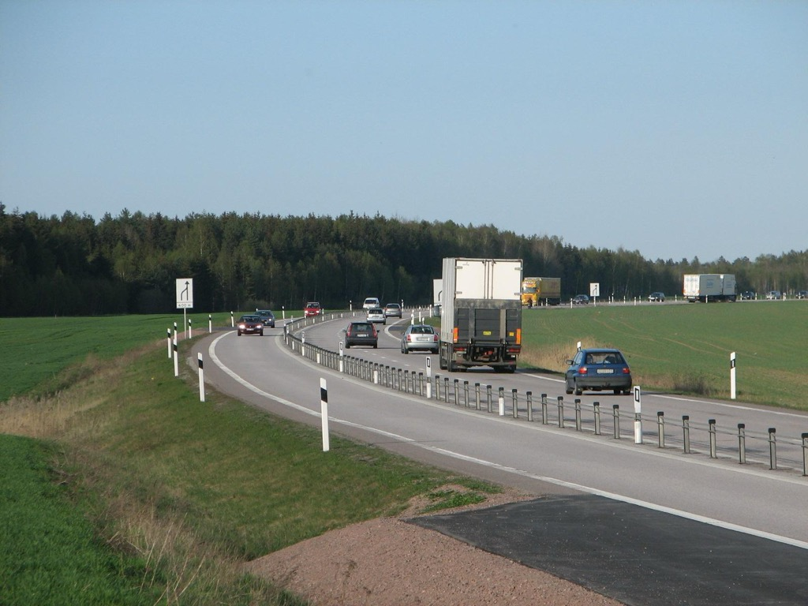

Part IV · Policy levers · Module 11
Safety: Vision Zero, Sustainable Safety, Safe System
In 1998 Swedish road workers began re-marking an ordinary two-lane road near Gävle. They painted three lanes where there had been two and strung a steel cable down the middle. Head-on crashes on that stretch became nearly impossible. The road was the first answer to a decision the Swedish parliament had taken the year before: that no one should be killed or seriously injured on the country's roads. Sweden did not put a higher price on a life. It set a limit, and then changed the roads, the speeds and the rules until the limit came within reach. This module follows that idea from Sweden to the Netherlands and to American cities. It asks what actually reduces road deaths, how fast, at what cost, and what a decision maker should ask before signing off a road design.
- The question
- Should road deaths be one cost among many, traded against travel time at a price? Or a limit that every design must meet first? And which measures actually bring the number of deaths down?
- What matters
- Whether a crash kills depends mostly on the speed and the difference in mass at the moment of impact. Separating people who move at different speeds, and slowing traffic where they mix, removes most deaths. Measures that only ask people to behave better remove few.
- Numbers to question
- The value of a statistical life (the US value is three to four times the European ones). The "survivable" impact speeds of 30, 50 and 70 km/h. How strongly deaths respond to speed. Whether countries are compared per person or per kilometer driven.
- Levers
- Speed limits and automated enforcement work within a year. Median barriers, roundabouts and redesigned streets work within a few years, road by road. Vehicle rules such as speed assistance work over the fifteen or more years it takes the car fleet to turn over. Less driving, through land use, works over a generation.
- Ask your analysts
- How many deaths and serious injuries does the plan predict, for which groups? Where can crashes still happen above survivable speeds? Does the appraisal let time savings pay for extra deaths? What did the independent safety audit find, and which of its findings were rejected, and why?
- State the principles of Vision Zero (Sweden, 1997), Sustainable Safety (Netherlands, 1992, 2005, 2018) and the Safe System approach (ITF/OECD, Australia, US), and explain why they treat deaths as a limit rather than a price.
- Assess the record: what Sweden, the Netherlands and US Vision Zero cities achieved, and where progress stalled.
- Use kinetic energy, stopping distance and differences in mass to explain why speed and vehicle size dominate injury outcomes.
- Rank common measures by evidence of effect, time to effect and type of cost, and organize them with the Haddon matrix.
- Explain what a limit on deaths costs in travel time, using its shadow price, and why a high shadow price is a signal to change the system rather than only lower speeds.
- Put the right questions to a road safety audit.
1. From "accidents" to system failures
Classic traffic safety work had three pillars, often called the three Es: engineering, education and enforcement. Its working assumption was that most crashes are caused by driver error. The main task was therefore to make road users behave better. Engineering focused on "black spots", locations with an unusual concentration of crashes. A countermeasure was funded when its crash savings, valued in money, exceeded its cost.
Three observations undermined this model:
- Error is normal. Even careful drivers misjudge gaps, overlook cyclists and lose attention. Training and enforcement reduce error rates, but never to zero. A system that requires perfect behavior will keep killing people.
- Harm depends on energy, not on blame. Whether a crash is fatal depends mainly on the energy of motion that reaches a human body. A pedestrian hit at 30 km/h usually survives. At 60 km/h usually not, whoever is at fault.
- Black spots are only part of the picture. On rural roads in particular, fatal crashes are spread thinly over long road lengths. Treating the worst sites leaves most of the risk untouched. Risk has to be removed from the network as a whole, for example by separating oncoming traffic everywhere.
The approaches that follow all start from these observations. They differ in emphasis, in legal status and in how they handle the trade-off with travel time.
2. Sweden: Vision Zero, a limit rather than a price constraints
Most appraisals put a money value on each death avoided, the value of a statistical life, and add it to the other costs (Module 3). With such a price, enough minutes saved by enough drivers can outweigh a death. Module 1, section 9 introduced the alternative: a limit, a condition a plan must meet before its benefits are added up at all. It also told how Claes Tingvall answered "Zero!" when the Swedish transport minister asked how many deaths the country should accept. This section shows what Sweden did with that answer.
In October 1997 the Swedish parliament, the Riksdag, adopted the government bill Nollvisionen och det trafiksäkra samhället (Prop. 1996/97:137, "Vision Zero and the traffic-safe society"). The bill makes moves that matter for this course.
"… ingen skall dödas eller skadas allvarligt till följd av trafikolyckor inom vägtransportsystemet." (§ 1, § 5.1)
"… no one shall be killed or seriously injured as a result of traffic crashes in the road transport system." The long-term goal.
"Regeringen anser att det från en etisk utgångspunkt inte kan accepteras att människor dödas eller skadas allvarligt i samband med förflyttningar inom vägtransportsystemet." (§ 5.1)
"The Government considers that, from an ethical standpoint, it cannot be accepted that people are killed or seriously injured while traveling within the road transport system." The ethical principle.
"Systemutformarna har det yttersta ansvaret för vägtransportsystemets utformning och funktion." (§ 5.3)
"The system designers bear the ultimate responsibility for the design and functioning of the road transport system." Shared responsibility: road users must follow the rules; if people are still killed or seriously injured, the designers must take further measures.
"Människans fysiska förutsättningar att tåla yttre våld vid trafikolyckor … bör vara normgivande vid utformningen av vägtransportsystemet." (§ 5.2)
"The human body's physical capacity to withstand external force in traffic crashes … should set the standard for the design of the road transport system."
Translated by the course authors (machine-assisted). Source: Prop. 1996/97:137, full text at lagen.nu (linked below); English digest.
Read as engineering, the third and fourth passages are the important ones. Responsibility moves from the person who made the mistake to the people who designed a system in which the mistake was fatal: road authorities, vehicle makers, fleet operators, regulators. And the design standard becomes the tolerance of the human body. That tolerance translates directly into maximum speeds at the moment of impact (section 5).
The signature measure: 2+1 roads with cable barriers

On Swedish rural main roads in the 1990s, head-on and run-off-road crashes caused most deaths. Separating oncoming traffic with a conventional motorway is expensive. The Swedish answer was the 2+1 road (mötesfri väg, "meeting-free road"). An existing 13 m wide road is re-marked into three lanes. The middle lane alternates direction every few kilometers to provide overtaking. A flexible wire-rope barrier (a "cable barrier") runs along the center line. The first scheme opened on the E4 near Gävle in 1998. Trafikverket, the Swedish transport administration, now reports roughly 3,250 km of 2+1 road.
An evaluation by the Swedish road research institute VTI found that deaths on converted roads fell by 77 %. Deaths plus serious injuries fell by 51 % on roads signed at 110 km/h and by 63 % on roads signed at 90 km/h. The safety level per kilometer driven became about the same as on motorways. The costs are real, too. The barrier is struck often and must be repaired. Capacity fell by about 15 %, because a road with one lane in one direction can carry less traffic. Motorcyclist organizations have criticized wire-rope barriers. (A. Vadeby, VTI, for the Trafikverket Vision Zero Academy.)
The 2+1 road is a clean illustration of the Safe System idea. It does not stop drivers from making errors, such as falling asleep or misjudging an overtaking maneuver. It changes the consequence of the error. A head-on crash at a closing speed of 180 km/h becomes a glancing blow against a barrier.
The record. Sweden had about 540 road deaths a year in the mid-1990s (Swedish National Road Administration, 1997). In 2024 it had 213, or 2.0 per 100,000 inhabitants, among the lowest rates in the world (section 8). Not all of the fall is due to Vision Zero. Cars became much safer everywhere in the same decades. But Sweden fell further than most countries that started from a similar level.
Vision Zero did not abolish cost–benefit analysis in Sweden. Trafikverket still values crashes with its official unit values (called ASEK) in appraisal. The goal of zero is long-term, and Sweden also sets interim targets: halve road deaths between 2020 and 2030, measured from the 2017–2019 average, and cut serious injuries by 25 %. In the terms of this course, Sweden runs a price in its appraisals and a limit in its long-term design philosophy at the same time. Section 9 shows why the two can be consistent.
3. Netherlands: Sustainable Safety (Duurzaam Veilig) C constraints
The Dutch road safety institute SWOV published the Sustainable Safety vision in 1992. Vision Zero starts from ethics and responsibility. Sustainable Safety starts from road design: give every road one clear function, and make its layout match that function. The vision has had three editions.
| Edition | Principles |
|---|---|
| 1992 (original) | Functionality, homogeneity, predictability |
| 2005, Door met Duurzaam Veilig | Functionality; homogeneity of mass, speed and direction; predictability and recognizability of road course and road user behavior; forgivingness of the environment and of road users; state awareness (road users' ability to assess their own capacity to drive) |
| 2018, DV3 — Visie Duurzaam Veilig Wegverkeer 2018–2030 | Three design principles: functionality of roads; (bio)mechanics, meaning limiting differences in speed, direction, mass and size and providing protection; psychologics, meaning aligning the road environment with road user competencies. Two organizational principles: effectively allocating responsibility; learning and innovating. |
Functionality means a strict road hierarchy. Every road is one of three kinds. A stroomweg (through road) carries fast traffic with no crossings at the same level. A gebiedsontsluitingsweg (distributor road) carries moderate speeds, with conflicts handled at junctions such as roundabouts. An erftoegangsweg (access road) has low speeds and mixed traffic. Crashes concentrate on mixed-function roads, such as a 50 km/h arterial that is also a residential street with driveways. There, design and behavior disagree. Homogeneity means that road users who might collide should have similar speeds and masses, or be physically separated. Where cars and cyclists mix, cars must go slowly. Where cars go fast, cyclists must have their own path.
"Een duurzaam veilig wegverkeer voorkomt doden, ernstig verkeersgewonden en blijvend letsel door onderliggende risico's van het gehele verkeerssysteem systematisch terug te dringen. Centraal staat daarbij 'de menselijke maat' …"
"A sustainably safe road traffic system prevents deaths, serious road injuries and permanent harm by systematically reducing the underlying risks of the entire traffic system. Central to this is 'the human measure' …" The page then explains that the system is built from people's needs, competencies, limitations and vulnerability.
Translated by the course authors (machine-assisted). Source: SWOV, duurzaamveiligwegverkeer.nl (2018).
The record. From 1998 the national and local governments ran a start-up program. They classified the whole road network by function, converted most residential streets into 30 km/h zones and rural access roads into 60 km/h zones, and built many roundabouts. SWOV's evaluation of 1998–2007 estimated that these measures prevented 300 to 400 deaths in 2007 alone, about 30 % fewer than expected without them. It estimated the benefits at several times the costs (SWOV fact sheet; Weijermars & Wegman, 2011).
A fair account must also note that Dutch progress has stalled. In the European Transport Safety Council's figures, Dutch road deaths rose from 570 in 2014 to 675 in 2024 (from 34 to 38 per million inhabitants). Older cyclists account for much of the rise, many of them in crashes involving no other vehicle, and so do electric bicycles. The Netherlands now has a higher death rate than Germany, the UK or Switzerland. Sustainable Safety handles conflicts between vehicles well. It has had less to say about falls from bicycles and about an aging population.
4. The Safe System approach constraints
The International Transport Forum (ITF) at the OECD generalized the Swedish and Dutch ideas as the Safe System. It did so in two reports: Towards Zero (2008) and Zero Road Deaths and Serious Injuries: Leading a Paradigm Shift to a Safe System (2016). Australia adopted the approach early. Its national road safety strategies have been built around the Safe System since the 2000s. The common core:
- People make mistakes, so crashes will happen.
- The human body has a limited tolerance to the energy of a crash before death or serious injury occurs.
- Responsibility is shared between road users and those who design, build, manage and use the system.
- All parts of the system must be strengthened, so that if one part fails, the others still protect people (redundancy).
- The approach is proactive: remove risk before crashes reveal it.
The standard elements are safe road users, safe vehicles, safe roads and roadsides, safe speeds, and care after the crash. The ITF report's slogan is "think safe roads, not safer roads". The goal is to bring the risk of death or serious injury close to zero by design, not just to improve on yesterday.
5. United States: Vision Zero cities and their mixed results constraints
US Vision Zero began in cities, not in the national government. New York adopted a Vision Zero action plan in 2014. San Francisco, Los Angeles, Chicago, Boston and many others followed, supported by the Vision Zero Network. The national picture since then has been bleak. US road deaths rose sharply after 2019, and pedestrian deaths reached their highest levels in decades.
Did the cities that adopted Vision Zero do better? A 2026 study by Robert Schneider and colleagues compared the 100 largest US cities. Seventeen of them had adopted Vision Zero early, between 2012 and 2016. Between 2008–2012 and 2018–2022, the traffic death rate of all 100 cities rose by a third. In the 17 early adopters, it rose by 15 %. In the other 83 cities, it rose by 40 %. Only three Vision Zero cities saw their death rate fall: New York, Boston and San Francisco (Schneider et al., Findings, 2026). The comparison is descriptive. Cities that adopt Vision Zero may differ from others in many ways. But it suggests that the pledge alone changes little. What changes outcomes is what a city then builds and enforces.
New York shows both sides. The city reported 205 traffic deaths in 2025, the fewest since its records began in 1910, and 31 % fewer than when Vision Zero started. Yet the count had already been 206 in 2018, and it climbed back above 250 in 2021 and again in 2024. The city credits automated speed cameras, which run around the clock since 2022, along with street redesigns and enforcement against unregistered vehicles (NYC DOT, January 2026). These are the city's own figures and attributions.
Hoboken, New Jersey, a dense city of about 60,000, has recorded no traffic deaths since January 2017. It systematically "daylighted" its intersections, removing parking spaces next to crossings so that drivers and pedestrians can see each other. It also lowered speed limits and changed signals. Treat single-city streaks with care: in a small population, a run of years without deaths can happen by chance.
At the federal level, the US Department of Transportation published the National Roadway Safety Strategy in January 2022. It names zero deaths as the long-term goal and adopts the Safe System approach. The 2021 Infrastructure Investment and Jobs Act created the Safe Streets and Roads for All grant program, which funds local safety action plans. The US strengths are data and research. Its national crash census (FARS), the Highway Safety Manual and its catalog of crash modification factors are used worldwide. The weaknesses are high exposure (Americans drive a great deal), wide multi-lane urban arterials with high speeds, ever heavier vehicles, and limited use of automated enforcement in many states.
6. The physics: energy, speed and mass C
Kinetic energy
A moving vehicle carries energy of motion, its kinetic energy. For a vehicle of mass \(m\) moving at speed \(v\), it is
$$E_k=\tfrac12 m v^2 .$$Energy grows with the square of speed. A car at 50 km/h carries \((50/30)^2\approx 2.8\) times the energy it carries at 30 km/h. Injury depends on how much of that energy reaches a body and how quickly.
Stopping distance: why 30 km/h is not just "a bit slower"
A driver who sees a hazard needs a moment to react, the reaction time \(t_r\). During it, the car travels on at full speed. Then the brakes slow it with a deceleration \(a\). The total stopping distance is
$$d_{\text{stop}}=v\,t_r+\frac{v^2}{2a}.$$Take \(t_r=1.0\) s and \(a=7\) m/s² (good braking on dry asphalt).
- At 30 km/h (8.33 m/s): \(d_{\text{stop}}=8.33+\dfrac{8.33^2}{14}=8.33+4.96=13.3\) m. The car stops 1.7 m short of the child.
- At 50 km/h (13.9 m/s): the car travels 13.9 m during the reaction time and has only 1.1 m left to brake. Impact speed: \(v_i=\sqrt{v^2-2a s}=\sqrt{193-2\cdot7\cdot1.1}=13.3\) m/s \(\approx 48\) km/h.
Lowering the travel speed by 20 km/h changes the impact speed by 48 km/h: from almost unbraked to no collision at all. This is the main engineering argument for 30 km/h where pedestrians and vehicles mix. Spain's Royal Decree 970/2020 states that the risk of death for a pedestrian is reduced "at least five-fold" when the impact speed is 30 rather than 50 km/h (see Module 12).
How the risk of death rises with impact speed
How likely is a pedestrian to die when hit at a given speed? Brian Tefft of the AAA Foundation for Traffic Safety estimated it from US crash records. On average, the risk of death is 10 % at an impact speed of 23 mph (37 km/h), 25 % at 32 mph (51 km/h), 50 % at 42 mph (68 km/h) and 90 % at 58 mph (93 km/h). Risk rises much faster for older people. A 70-year-old struck at 25 mph faces about the same risk of severe injury or death as a 30-year-old struck at 35 mph (Tefft, 2011). For a country such as Japan, where more than half of road deaths are people over 65, that matters a great deal (section 8).
Mass: who absorbs the blow
When a light vehicle hits a heavy one, the light one's speed changes much more. Its occupants absorb most of the blow. A 1,500 kg car that hits a 2,500 kg SUV head-on, both at 50 km/h, undergoes a sudden change of speed of about 62 km/h. The SUV undergoes about 37 km/h. Against a 40-tonne truck, the car's change of speed is almost the whole closing speed. For a cyclist or pedestrian hit by any car, it is essentially the whole impact speed. This is the physics behind Sustainable Safety's homogeneity principle, and behind the debate about ever heavier cars in the US and Europe. The derivation is in the box below.
Speed across a whole network
Module 1 introduced Göran Nilsson's power model: across a road network, deaths change roughly with the fourth power of the change in mean speed. A 10 % lower mean speed means roughly a third fewer deaths. Later work refined the rule. Rune Elvik of the Norwegian Institute of Transport Economics (TØI) pooled 115 studies in 2009. He found that the effect is stronger on rural roads and motorways than in towns. For people killed, his exponent is about 4.6 on rural roads and motorways but about 3.0 on urban roads (ONISR summary of Nilsson and Elvik). Two lessons follow for decision makers. A modest cut in mean speed is one of the most powerful safety measures there is. And a single exponent applied everywhere overstates the effect in towns and understates it on fast roads.
Under the hoodMomentum exchange, power-model exponents, and why they differ
Momentum exchange. Take a collision in which two vehicles move together after impact (a "perfectly plastic" collision). Momentum, mass times velocity, is conserved. Let \(v_{\text{rel}}\) be the closing speed. Then each vehicle's change of speed is
$$\Delta v_1=\frac{m_2}{m_1+m_2}\,v_{\text{rel}},\qquad \Delta v_2=\frac{m_1}{m_1+m_2}\,v_{\text{rel}} .$$For the car (1,500 kg) and SUV (2,500 kg) at \(v_{\text{rel}}=100\) km/h: \(\Delta v_1=\tfrac{2500}{4000}\cdot100=62.5\) km/h and \(\Delta v_2=37.5\) km/h. Against a 40 t truck: \(\Delta v_1=\tfrac{40000}{41500}\cdot100\approx 96\) km/h. Real crashes are partly elastic and rotate the vehicles, so these are upper bounds, but the ratio is robust.
The power model. For mean speeds \(\bar v_1\) before and \(\bar v_2\) after a change, Nilsson wrote
$$\frac{F_2}{F_1}=\left(\frac{\bar v_2}{\bar v_1}\right)^{4},\qquad \frac{S_2}{S_1}=\left(\frac{\bar v_2}{\bar v_1}\right)^{3},\qquad \frac{I_2}{I_1}=\left(\frac{\bar v_2}{\bar v_1}\right)^{2},$$for fatal crashes \(F\), fatal plus serious injury crashes \(S\) and all injury crashes \(I\). Elvik's 2009 update (TØI report 1034/2009) estimated separate exponents by road type:
| Outcome | Rural roads and motorways | Urban roads |
|---|---|---|
| Injury crashes | 1.6 | 1.2 |
| People injured | 2.2 | 1.4 |
| Fatal crashes | 4.1 | 2.6 |
| People killed | 4.6 | 3.0 |
Why the exponents differ. A power model says that the same percentage change in speed has the same percentage effect, whatever the starting speed. A 10 % cut from 100 km/h (10 km/h) and from 30 km/h (3 km/h) would be equally effective. Physics suggests that the absolute change matters too, and urban crashes involve more pedestrians, junctions and low speeds. Elvik's later work therefore also compares the power model with an exponential model, in which each km/h has a fixed percentage effect. For appraisal, use exponents for the right road type, report the range, and do not extrapolate to speed changes far outside the evidence.
Survivable impact speeds
Safe System documents often state that the human body tolerates roughly the impact speeds in the table. They come from curves of fatality risk against impact speed presented by Per Wramborg of the Swedish Road Administration in 2005, often called the "Wramborg curves".
| Conflict type | Commonly cited maximum impact speed | Design implication |
|---|---|---|
| Vehicle vs pedestrian or cyclist | ≈ 30 km/h | 30 km/h where people on foot and bike mix with cars, or physical separation |
| Side impact, car vs car (e.g., at a junction) | ≈ 50 km/h | Roundabouts or low approach speeds at junctions with crossing traffic |
| Head-on, car vs car | ≈ 70 km/h | Median separation (2+1, barriers) above about 70 km/h |
These thresholds are widely used, but their basis is thin. Australian researchers from ARRB and the University of Adelaide's Centre for Automotive Safety Research (Jurewicz and colleagues, 2015–2016) note that the original conference paper cited no underlying data. They propose alternative curves for serious injury, and argue that the critical speed for frail or very young pedestrians may be below 30 km/h. Use the thresholds as design rules of thumb, not as precise biomechanical constants.
7. What actually reduces deaths: how fast, and at what cost C A
A decision maker has a budget, a term of office and a list of possible measures. The table brings together evidence from this module. The effect sizes come from different places and methods, so compare their order of magnitude, not their decimals.
| Measure | Evidence of effect | Time to effect | Main cost |
|---|---|---|---|
| Automated speed enforcement | France: national camera program from November 2003, associated with about 20 % fewer deaths and injury crashes (Blais & Carnis, 2015). Sweden: about 30 % fewer deaths at camera sites (Vadeby, VTI). | Months | Modest money; political cost and some travel time |
| Lower speed limits matched to the road | Sweden's 2008–2009 review of rural limits: about 17 fewer deaths a year, mostly where limits fell from 90 to 80 km/h (Vadeby, VTI) | Months, if limits are respected | Travel time; needs enforcement or design to stick |
| Separating oncoming traffic (2+1 roads, median barriers) | Sweden: deaths on converted roads down 77 % (section 2) | Years, road by road | Construction, barrier repairs, about 15 % less capacity |
| Network classification, 30 km/h zones, roundabouts | Netherlands 1998–2007: about 30 % fewer deaths than expected by 2007, benefits several times costs (section 3) | Years to a decade | Construction; longer car trips on access roads |
| Street redesign at crossings (daylighting, raised crossings, protected bike lanes) | Strong in single cities (Hoboken, New York); hard to separate from other measures | Years | Curb space, parking spaces (Module 12) |
| Vehicle standards (automatic emergency braking, intelligent speed assistance) | The EU has required intelligent speed assistance, which warns drivers above the limit, in all newly registered cars since July 2024 | Fifteen years or more, as the fleet turns over | Paid by car buyers; drivers can switch the system off |
| Less exposure: shorter trips, more walking, cycling and transit | Explains much of the per-person gap between the US and Europe (section 8) | A generation | Land-use and network change (Module 5) |
Three patterns stand out. First, speed is the fastest lever, through limits and above all through enforcement. It is also the most unpopular (France, section 8). Second, physical separation is slower and costs money, but it keeps working when people make mistakes and needs no daily enforcement. Third, measures that only inform or exhort road users are missing from the table. That is not because nobody tries them. It is because their effect on deaths is hard to show on its own.
A checklist: the Haddon matrix
William Haddon Jr., the first head of the US National Highway Safety Bureau (today's NHTSA), proposed in the late 1960s to analyze injuries along two dimensions. One is the phase of the event: before, during and after the crash. The other is the factor involved: the human, the vehicle, and the environment. The resulting matrix is a checklist that keeps the analyst from fixating on driver behavior.
| Phase | Human | Vehicle | Environment (road, rules, institutions) |
|---|---|---|---|
| Pre-crash (prevent the crash) | training, alcohol and drug limits, fatigue rules, enforcement | brakes, lighting, intelligent speed assistance, automatic emergency braking | speed limits matched to design, roundabouts, sight lines, separated cycle tracks, closing streets to through traffic |
| Crash (reduce harm) | seat belts, helmets | crumple zones, airbags, pedestrian-friendly front ends, vehicle mass and hood height | cable barriers, forgiving roadsides, crash cushions, low impact speeds by design |
| Post-crash (survive) | first-aid knowledge | eCall automatic emergency call (mandatory in new EU car types since 2018) | emergency response times, trauma care, crash investigation and learning |
A Safe System reading of the matrix says: rely most on the crash row and on the vehicle and environment columns. They work even when the human in the pre-crash cell fails.
What to ask of a safety audit
A road safety audit is an independent check of a road design for safety problems, made before it is built and again before it opens. In the EU, Directive 2008/96/EC made audits mandatory on the trans-European road network. Its 2019 revision (Directive 2019/1936) extended them to motorways and other primary roads and added explicit attention to vulnerable road users such as pedestrians and cyclists (consolidated text). Many cities apply audits to their own streets voluntarily. An audit is only as useful as the questions it answers. A decision maker can ask:
- Who audited, and how independent were they? The auditor should not have worked on the design.
- Against which standard? Was the design checked against survivable impact speeds for every conflict (people on foot and bike, crossing traffic, oncoming traffic)? Or only against design standards for the vehicle, such as sight distance at a design speed?
- Which users were considered? Children, older people, people with disabilities, cyclists, motorcyclists, at night and in winter?
- What speeds will people actually drive? A street that looks fast will be driven fast, whatever the sign says (Module 12).
- How many deaths and serious injuries are predicted, using which crash model, for which groups? Is that consistent with the city's limit?
- Which findings did the designers reject, and why? Ask for the audit report and the designers' response, not a summary.
- Will there be a follow-up after opening, with crash and speed data published?
8. National practice compared
International fatality rates
Rates per person are the simplest comparison. But they mix exposure (how much people travel, and by which mode) with risk. All figures below count deaths within 30 days of the crash, the international definition, unless noted.
| Country | Road deaths | Deaths per 100,000 inhabitants | Year · source |
|---|---|---|---|
| Norway | 89 | 1.6 | 2024 · ETSC PIN 2025 (provisional) |
| Sweden | 213 | 2.0 | 2024 · ETSC PIN 2025 |
| Denmark | 145 | 2.4 | 2024 · ETSC PIN 2025 (provisional) |
| United Kingdom | 1,702 | 2.5 | 2024 · ETSC PIN 2025 |
| Japan | 3,221 (30-day); 2,663 (24-hour) | ≈ 2.6 (30-day) | 2024 · National Police Agency figures; rate computed by the course authors with a population of ≈ 124 million |
| Switzerland | 250 | 2.8 | 2024 · ETSC PIN 2025 |
| Germany | 2,759 | 3.3 | 2024 · ETSC PIN 2025 (provisional) |
| Spain | 1,751 | 3.6 | 2024 · ETSC PIN 2025 (provisional) |
| Netherlands | 675 | 3.8 | 2024 · ETSC PIN 2025 (provisional) |
| EU-27 | 20,017 | 4.5 | 2024 · ETSC PIN 2025 |
| France | 3,193 | 4.8 | 2024 · ETSC PIN 2025 (metropolitan France) |
| Italy | 3,030 | 5.1 | 2024 · ETSC PIN 2025 (provisional) |
| Romania | 1,477 | 7.7 | 2024 · ETSC PIN 2025 (provisional) |
| United States | 40,901 | 12.2 | 2023 · NHTSA (FARS) |
Three cautions. First, Japan's headline statistic counts deaths within 24 hours. Multiply by about 1.2 to compare with the 30-day figures used elsewhere, as Japan's own plan does. Second, the US rate per vehicle-mile (1.26 deaths per 100 million miles in 2023) is closer to European rates than the per-person rate, because Americans drive much more. The per-person gap is partly an exposure gap, and exposure is itself a planning outcome (Module 5). Third, small countries' annual figures fluctuate. Use multi-year averages for serious comparisons. For global coverage, use the WHO Global status report on road safety 2023 and the ITF's IRTAD annual reports.
Germany: Vision Zero in the administrative rules
Germany adopted Vision Zero in its federal road safety program for 2021–2030, which aims to cut road deaths by 40 % by 2030 and to reduce serious injuries. Since the 2021 revision, the general administrative regulation to the Road Traffic Regulations (VwV-StVO) also names Vision Zero as the basis of all traffic measures:
"Die Straßenverkehrs-Ordnung (StVO) regelt und lenkt den öffentlichen Verkehr. Oberstes Ziel ist dabei die Verkehrssicherheit. Hierbei ist die „Vision Zero“ (keine Verkehrsunfälle mit Todesfolge oder schweren Personenschäden) Grundlage aller verkehrlichen Maßnahmen."
"The Road Traffic Regulations (StVO) regulate and direct public traffic. The highest objective is road safety. In this, 'Vision Zero' (no traffic crashes resulting in death or serious injury) is the basis of all traffic measures."
Translated by the course authors (machine-assisted). Official legal text, verwaltungsvorschriften-im-internet.de.
The tension is in the statute. An administrative regulation guides how authorities use their discretion, but it cannot override the law. § 45(9) StVO still requires that restrictions on moving traffic, such as a lower speed limit, be justified by a local danger that "considerably exceeds" the general risk. Municipalities wanting 30 km/h on main roads have found this hard to show. The 2024 reform of the Road Traffic Act (StVG) and the StVO added climate, health and urban development as permissible grounds, but only provided that "the ease of traffic" is considered and safety is not impaired. Germany is thus a case where the limit is stated in the rules while the legal burden of proof still sits with the restriction. Germany has a recommended motorway speed of 130 km/h (Richtgeschwindigkeit) but no general motorway limit.
Japan: national five-year plans and "Zone 30 Plus"
Japan has run five-year Traffic Safety Basic Plans (交通安全基本計画) since 1971, under the Traffic Safety Policies Basic Act of 1970. Deaths fell from a peak of 16,765 (24-hour count) in 1970 to 2,663 in 2024. The 11th plan (第11次交通安全基本計画), decided by the Central Traffic Safety Policy Council on 29 March 2021 for fiscal years 2021–2025, is built on a "people first" philosophy.
「道路交通については，自動車と比較して弱い立場にある歩行者等の安全を，また，全ての交通について，高齢者，障害者，子供等の交通弱者の安全を，一層確保する必要がある。……このような「人優先」の交通安全思想を基本とし，あらゆる施策を推進していく。」
"In road traffic, the safety of pedestrians and others in a weaker position than motor vehicles, and in all modes the safety of vulnerable people such as older people, people with disabilities and children, must be further secured. … All measures shall be promoted on the basis of this 'people first' (人優先) philosophy of traffic safety."
「令和７年までに24時間死者数を2,000人以下とする。」「令和７年までに重傷者数を22,000人以下にする。」
"By 2025, reduce 24-hour road deaths to 2,000 or fewer" (the plan notes this equals about 2,400 on a 30-day basis) "and seriously injured people to 22,000 or fewer."
Translated by the course authors (machine-assisted). Source: Cabinet Office, 第11次交通安全基本計画, pp. 1 and target section.
The 2025 death target was missed: deaths were 2,663 in 2024, and Cabinet Office review papers acknowledged the shortfall. Japan's distinctive problem is age. More than half of its road deaths are people aged 65 or over (56.8 % in 2024), many of them pedestrians. Its main local tool is the Zone 30 (an area-wide 30 km/h limit, introduced by the National Police Agency in 2011). In August 2021 the road ministry (MLIT) and the National Police Agency launched Zone 30 Plus (ゾーン30プラス). It combines the 30 km/h area limit with physical devices such as humps and road narrowings. These are covered in Module 12, together with the new 30 km/h default limit on residential streets from September 2026.
France: enforcement at scale, and its political cost
France had one of Western Europe's worst safety records around 2000, with about 8,000 road deaths in 2001. President Chirac made road safety a national priority in 2002. The first fixed automated speed cameras (contrôle automatisé) were installed in late 2003. Offenses are processed centrally and automatically. The national road safety observatory, ONISR, summarizes the decade:
"Plus de 30000 vies ont été épargnées durant cette période, dont les trois quarts grâce à la baisse des vitesses pratiquées."
"More than 30,000 lives were spared during this period, three-quarters of them thanks to the reduction in speeds actually driven."
Translated by the course authors (machine-assisted). Source: Observatoire national interministériel de la sécurité routière.
Deaths fell to 4,273 in 2009 and to about 3,200 by the mid-2010s, then plateaued (3,193 in 2024). In July 2018 France lowered the limit on two-lane rural roads without a central separator from 90 to 80 km/h. The 2019 mobility law (the LOM) then let départements restore 90 km/h on some roads. Cities such as Grenoble, Paris (from August 2021) and Lyon adopted 30 km/h as the general limit (Ville 30). France illustrates a Safe System lever other than road design: enforcing speed at scale. It also illustrates the political cost. The 80 km/h limit was one of the grievances of the 2018–2019 gilets jaunes protests, and many speed cameras were vandalized.
9. Safety in \(W\): price or limit? C constraints
Module 1, section 9 explained the general idea. A limit on deaths does not value a life "infinitely". It fixes the target and lets the cost of meeting it be whatever it turns out to be. That cost, per death avoided at the margin, is the limit's shadow price. This section works it out for a single road, to show what the shadow price tells a decision maker.
Take a rural main road. The only policy choice is the mean speed. Slower traffic costs travel time, which lowers the users' welfare in Term A. Faster traffic causes more deaths, following the power model. Under a price, each death counts as the value of a statistical life, and the best speed balances minutes against deaths. Under a limit, the speed must be low enough to keep deaths below the limit, whatever the minutes cost.
The road carries 100 million vehicle-km a year. A vehicle-hour is valued at €15, and a statistical life at €4 million. At today's mean speed of 90 km/h, 3 people die on it each year. These are illustrative values, not any country's official ones.
- Price only. At 90 km/h, slowing by 1 km/h costs about €185,000 a year in time and saves deaths worth about €533,000. So even the price logic calls for a lower speed. The best speed under the price is about 73 km/h, with about 1.3 deaths a year. Time costs rise from €16.7 million to €20.6 million a year.
- Limit of 0.5 deaths a year, with speed as the only lever. The mean speed must fall to about 57.5 km/h. Time costs rise to €26.1 million a year. At the margin, each further death avoided costs about €13 million in travel time: the shadow price. That is more than three times the value of a statistical life.
- Change the system instead. Build a 2+1 road with a cable barrier that cuts deaths at any given speed by 75 %. The limit is now met at about 81 km/h. Time costs are €18.4 million a year, and the shadow price falls to about €9 million. The road is both safer and faster than in case 2.
- Price only, with the barrier. The best speed rises to about 96 km/h, and deaths go back up to about 1.0 a year. Under a price alone, part of the safety gain is "spent" on speed. Sweden did in fact raise the limit on some 2+1 roads from 90 to 100 km/h.
Lesson: a high shadow price is not an argument against the limit. It is a signal that the current tools are poor. It says: change the system (separation, vehicle technology, network design), instead of only squeezing speed.
Under the hoodThe speed problem as a price and as a limit, with the Lagrangian
Let \(Q\) be traffic in vehicle-km per year, \(\mathrm{VTTS}\) the value of travel time per vehicle-hour, and \(F_0\) the deaths per year at a reference speed \(v_0\). With the power model, deaths at mean speed \(v\) are \(F(v)=F_0\,(v/v_0)^4\). Travel time per year is \(Q/v\) hours.
Price. Minimize the sum of time cost (a loss in Term A) and death cost (Term C):
$$\min_v\; \mathrm{VTTS}\cdot\frac{Q}{v}+\mathrm{VSL}\cdot F_0\Big(\frac{v}{v_0}\Big)^{4}.$$Setting the derivative to zero equates the marginal time cost of slowing down with the marginal value of deaths avoided:
$$\mathrm{VTTS}\cdot\frac{Q}{v^{2}}=\mathrm{VSL}\cdot\frac{4F_0v^{3}}{v_0^{4}}\quad\Rightarrow\quad v^{*}=\left(\frac{\mathrm{VTTS}\cdot Q\cdot v_0^{4}}{4\,\mathrm{VSL}\cdot F_0}\right)^{1/5}.$$With the example's values, \(v^{*}=\big(1.5\times10^{9}\cdot 90^{4}/(4\cdot 4\times10^{6}\cdot 3)\big)^{1/5}\approx 72.8\) km/h.
Limit. Impose \(F(v)\le\bar F\). The Lagrangian of the cost-minimization problem is
$$\mathcal{L}(v,\nu)=\mathrm{VTTS}\cdot\frac{Q}{v}+\nu\,\big(F(v)-\bar F\big),\qquad \nu\ge 0 .$$If the limit binds, \(\nu^{*}=\dfrac{\mathrm{VTTS}\cdot Q/v^{2}}{F'(v)}\), evaluated where \(F(v)=\bar F\). With \(F'(v)=4F(v)/v\): \(v=90\cdot(0.5/3)^{1/4}\approx 57.5\) km/h and \(\nu^{*}=\dfrac{1.5\times10^{9}/57.5^{2}}{4\cdot0.5/57.5}\approx €13.0\) million. With the barrier (\(F_0=0.75\)): \(v=90\cdot(0.5/0.75)^{1/4}\approx 81.3\) km/h and \(\nu^{*}\approx €9.2\) million.
Both at once. With the price in \(W\) and the limit as a constraint, the condition becomes: marginal time cost \(=(\mathrm{VSL}+\nu)\,F'(v)\). The limit is slack (\(\nu=0\)) when the price alone already achieves \(\bar F\). When it binds, the effective value of a death avoided is \(\mathrm{VSL}+\nu\). This is how Sweden can use crash values in appraisal and a long-term limit at the same time.
The classic engineering objective, minimum total vehicle travel time, has no price on crashes and no limit. Safety then enters only through design standards. These were historically derived from vehicle dynamics, such as stopping sight distance and curve radii for a chosen design speed. They therefore encouraged higher design speeds as "safer". Both the price view and the limit view correct that bias. They differ in who carries the burden of proof. A crash-value appraisal can justify a fast new road that adds deaths, if it saves enough time. A limit cannot.
Equity also enters. Pedestrians, cyclists, children and older people bear a large share of the harm while bringing little of the energy into a crash. The weights on different groups in Term A, and the minimum access every group should have, interact with safety. A child's independent access to school is part of their accessibility. It is impossible on a street that is too dangerous to cross.
Use the worked example in section 9 and the formulas in its "Under the hood" box, with your own country's appraisal values for travel time and a statistical life (see Module 3).
- Compute the price-only best speed. Repeat with the power-model exponent at 3.0 and 4.6 (Elvik's urban and rural values). How sensitive is the answer?
- Impose a limit of 0.5 deaths a year and compute the shadow price with speed as the only lever.
- A 2+1 conversion costs €1.5 million per km (an illustrative figure). Over a 40 km road, with a 4 % discount rate and a 40-year life, does it pass a cost–benefit test under the price alone? Under the limit, compare its yearly cost with the extra time cost of meeting the limit by speed alone.
Choose a signalized four-arm junction near you where a cyclist has been killed or seriously injured. Fill in all nine cells of the Haddon matrix with candidate measures. Mark each measure as (a) relying on road users to comply, or (b) working even if a road user makes an error. Which cells would Sustainable Safety's homogeneity principle fill? Would replacing the junction with a roundabout with separated cycle paths meet the "≈ 50 km/h side impact" and "≈ 30 km/h vulnerable user" thresholds? Rank your measures by the time they would take to have an effect.
Using the table in section 8, recompute the US–Sweden comparison per vehicle-kilometer. Find Swedish vehicle-km in national statistics (Trafikanalys) and US vehicle-miles from NHTSA. Which part of the gap is risk per kilometer, and which part is how much people drive? Which part could a road authority change within five years, and which part only land use and transport networks can change?
Obtain a road safety audit for a recent project in your city (often available on request, or in council papers). Go through the seven questions in section 7. Which can you answer from the document? Which findings were accepted, and which rejected? Write a half-page note to a council member saying what they should ask before approving the design.
Readings and resources
- Prop. 1996/97:137 — Nollvisionen och det trafiksäkra samhället (full text, lagen.nu) (Swedish) The Vision Zero bill adopted by the Riksdag in 1997. Read sections 5.1–5.5 on ethics, human tolerance, responsibility and speed.
- Trafikverket Vision Zero Academy — Publications related to Vision Zero English-language papers and reports from the Swedish Transport Administration, including on 2+1 roads and speed management.
- Vadeby (VTI) — Results: safety benefits of implemented measures Measured effects of Swedish 2+1 roads, new rural speed limits and speed cameras.
- Trafikverket (2025) — Färre döda i vägtrafiken, men fler insatser behövs för att nå nollvisionen (Swedish) Current Swedish status, interim targets and the role of median-separated roads.
- SWOV — DV3: Visie Duurzaam Veilig Wegverkeer 2018–2030 (Dutch; English version at sustainablesafety.nl) The third edition of Sustainable Safety with its principles for design and organization, plus background reports.
- SWOV — Has Sustainable Safety increased road safety? Summary of the 1998–2007 evaluation. Full study: Weijermars & Wegman (2011), "Ten years of sustainable safety in the Netherlands: an assessment", Transportation Research Record 2213.
- ITF/OECD (2016) — Zero Road Deaths and Serious Injuries: Leading a Paradigm Shift to a Safe System The international statement of the Safe System approach, with country case studies and ten recommendations.
- Schneider, Barbee, Nelson & Gu (2026) — Examining a lost decade for traffic safety in large US cities, Findings How US Vision Zero cities fared against other large cities, 2008–2022.
- USDOT (2022) — National Roadway Safety Strategy The US federal adoption of the Safe System approach and its five objectives.
- Vision Zero Network (US) Resources on US city Vision Zero programs, action plans and speed management.
- Tefft (2011) — Impact speed and a pedestrian's risk of severe injury or death (AAA Foundation) Risk curves by impact speed and age.
- ONISR (2014) — Les modèles de Nilsson et Elvik (French) Two-page summary of the power model and Elvik's 2009 exponents by road type.
- Blais & Carnis (2015) — Improving the safety effect of speed camera programs through innovations: evidence from the French experience, Journal of Safety Research 55 Time-series evaluation of France's automated speed enforcement.
- Directive 2008/96/EC on road infrastructure safety management (consolidated, with the 2019 amendments) The EU rules on road safety audits, network assessments and vulnerable road users.
- ETSC (2025) — 19th Road Safety Performance Index (PIN) Report Source of the European figures in section 8. Annex tables give deaths, rates and national targets.
- WHO (2023) — Global status report on road safety 2023 Global estimates by country, with legislation and Safe System indicators.
- VwV-StVO — Allgemeine Verwaltungsvorschrift zur Straßenverkehrs-Ordnung (German) Official text. See the note on § 1 for Vision Zero and the notes on §§ 39–45 for how speed limits may be ordered.
- BMV — Verkehrssicherheitsprogramm der Bundesregierung 2021 bis 2030 (German) Germany's federal road safety program and its 2030 targets.
- 内閣府 — 第11次交通安全基本計画 (Japanese; English version on the same page) Japan's 11th Traffic Safety Basic Plan (2021–2025) with its "people first" philosophy and targets.
- 国土交通省 — 「ゾーン30プラス」について (2021) (Japanese) The MLIT–NPA announcement of Zone 30 Plus, which combines 30 km/h zones with physical devices.
- ONISR — Bilans annuels de la sécurité routière 2000–2009 (French) French national observatory's review of the decade of automated enforcement.
- Tingvall, C. & Haworth, N. (1999) — "Vision Zero: an ethical approach to safety and mobility", 6th ITE International Conference on Road Safety & Traffic Enforcement, Melbourne The short paper that introduced Vision Zero to the international audience.
- Elvik, R., Høye, A., Vaa, T. & Sørensen, M. — The Handbook of Road Safety Measures (2nd ed., Emerald, 2009) Meta-analyses of the effects of more than 100 safety measures. The empirical companion to the Haddon matrix.
- Jurewicz, C., Sobhani, A., Woolley, J., Dutschke, J. & Corben, B. (2016) — "Exploration of vehicle impact speed – injury severity relationships for application in safer road design", Transportation Research Procedia 14 Critique of the Wramborg curves and alternative impact-speed thresholds.